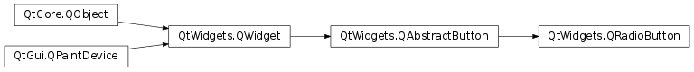

QRadioButton¶
Synopsis¶
Functions¶
- def
initStyleOption(button)
Detailed Description¶
The
PySide2.QtWidgets.QRadioButtonwidget provides a radio button with a text label.
A
PySide2.QtWidgets.QRadioButtonis an option button that can be switched on (checked) or off (unchecked). Radio buttons typically present the user with a “one of many” choice. In a group of radio buttons, only one radio button at a time can be checked; if the user selects another button, the previously selected button is switched off.Radio buttons are
PySide2.QtWidgets.QAbstractButton.autoExclusive()by default. If auto-exclusive is enabled, radio buttons that belong to the same parent widget behave as if they were part of the same exclusive button group. If you need multiple exclusive button groups for radio buttons that belong to the same parent widget, put them into aPySide2.QtWidgets.QButtonGroup.Whenever a button is switched on or off, it emits the
PySide2.QtWidgets.QAbstractButton.toggled()signal. Connect to this signal if you want to trigger an action each time the button changes state. UsePySide2.QtWidgets.QAbstractButton.isChecked()to see if a particular button is selected.Just like
PySide2.QtWidgets.QPushButton, a radio button displays text, and optionally a small icon. The icon is set withPySide2.QtWidgets.QAbstractButton.setIcon(). The text can be set in the constructor or withPySide2.QtWidgets.QAbstractButton.setText(). A shortcut key can be specified by preceding the preferred character with an ampersand in the text. For example:button = QRadioButton("Search from the &cursor", self)In this example the shortcut is Alt+c . See the
QShortcutdocumentation for details. To display an actual ampersand, use ‘&&’.Important inherited members:
PySide2.QtWidgets.QAbstractButton.text(),PySide2.QtWidgets.QAbstractButton.setText(),PySide2.QtWidgets.QAbstractButton.text(),PySide2.QtWidgets.QAbstractButton.setDown(),PySide2.QtWidgets.QAbstractButton.isDown(),PySide2.QtWidgets.QAbstractButton.autoRepeat(),PySide2.QtWidgets.QAbstractButton.group(),PySide2.QtWidgets.QAbstractButton.setAutoRepeat(),PySide2.QtWidgets.QAbstractButton.toggle(),PySide2.QtWidgets.QAbstractButton.pressed(),PySide2.QtWidgets.QAbstractButton.released(),PySide2.QtWidgets.QAbstractButton.clicked(), andPySide2.QtWidgets.QAbstractButton.toggled().
-
class
PySide2.QtWidgets.QRadioButton([parent=nullptr])¶ -
class
PySide2.QtWidgets.QRadioButton(text[, parent=nullptr]) Parameters: - text – unicode
- parent –
PySide2.QtWidgets.QWidget
Constructs a radio button with the given
parent, but with no text or pixmap.The
parentargument is passed on to thePySide2.QtWidgets.QAbstractButtonconstructor.Constructs a radio button with the given
parentandtextstring.The
parentargument is passed on to thePySide2.QtWidgets.QAbstractButtonconstructor.
-
PySide2.QtWidgets.QRadioButton.initStyleOption(button)¶ Parameters: button – PySide2.QtWidgets.QStyleOptionButtonInitialize
optionwith the values from thisPySide2.QtWidgets.QRadioButton. This method is useful for subclasses when they need aPySide2.QtWidgets.QStyleOptionButton, but don’t want to fill in all the information themselves.See also
© 2018 The Qt Company Ltd. Documentation contributions included herein are the copyrights of their respective owners. The documentation provided herein is licensed under the terms of the GNU Free Documentation License version 1.3 as published by the Free Software Foundation. Qt and respective logos are trademarks of The Qt Company Ltd. in Finland and/or other countries worldwide. All other trademarks are property of their respective owners.